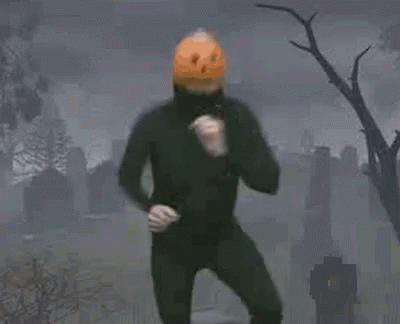

I USA
I Usa har halloween fått sitt ursprung och även då bus eller godis kommit ifrån det. Dom har ofta en tradition för sinna barn att gå utt en liten del senare på natten och knacka på hos personer och fråga efter godis eller något annat gott med läskia kostymer av t.ex spöken pumpor varulvar hexor och mycket mer. Om ägaren inte kan uppfylla kravet så kan dom ofta busa med dom genom att t.ex Skräma dom eller stöka till det för dem
I Sverige
I sverige har halloween tagits allt mer serriöst sedan det kom in. Men ändå har inte bus eller godis varit en stort favorit tradition. Många svenskar upplever traditionen som stökig eller störande för dem personer som bor där i samhället och massvis med folk saknar godis i sina hem. Dock så blir det en bättre framgång för varje år som går
Exempel på kläder för bus eller godis
